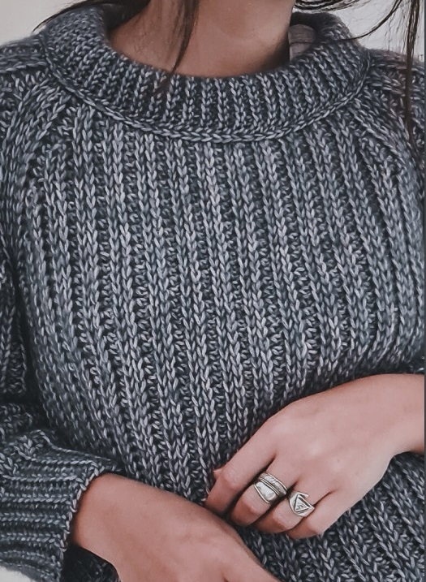

40% OFF
15 USD 9 USD
Materiales
- Aguja n° 4,5
- 450g (Aprox. 100g más por cada talle mayor) de hilado de grosor medio. (el que yo usé fue Cotton Merino de Katia)
- Aguja lanera
- Aguja N°7
- Aguja N°6
- Tijera
- Marcadores (si los crees necesarios)